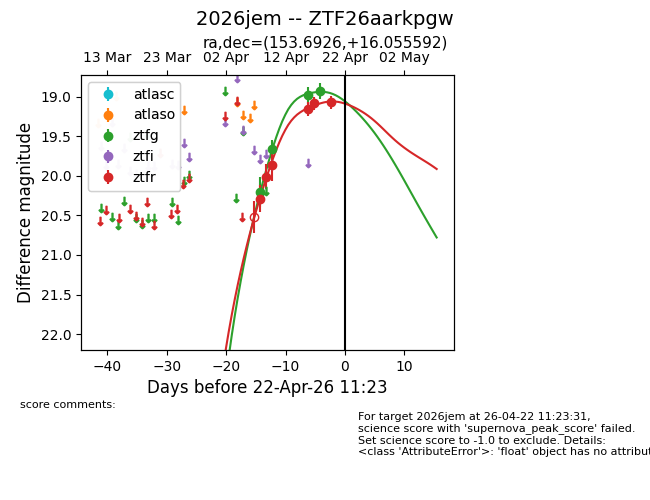
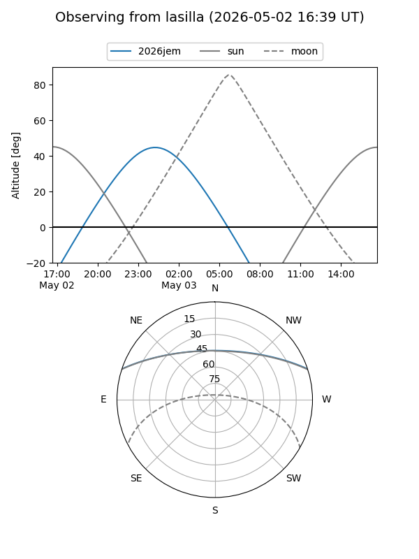
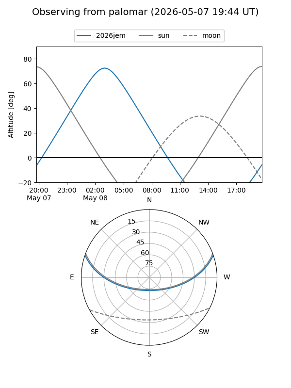
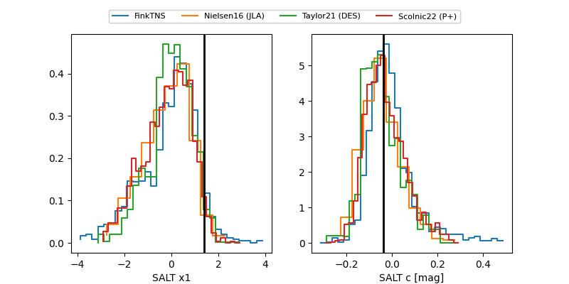

2026jem
Target 2026jem at 2026-04-22 11:27
Aliases and brokers:
FINK: link
Lasair: link
ALeRCE: link
TNS: link
YSE: link
alt names
ZTF26aarkpgw (ztf,fink_ztf)
2026jem (tns,yse)
Coordinates:
equatorial (ra, dec) = 153.6926,+16.05559
equatorial (HMS+DMS) = 10:14:46.23,+16:03:20.13
galactic (l, b) = (221.6983,+52.11205)
Flags:
Photometry:
last ztfg=18.93, ztfr=19.07
4 ztfg, 6 ztfr detections
Lightcurve

Visibility


Additional plots
